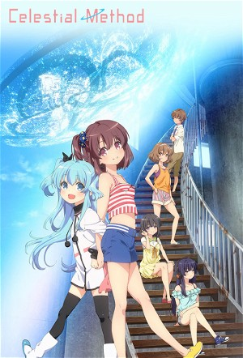

Celestial Method (2014)
FantasyDramaAnimationAnime
| Year | 2014 |
|---|---|
| Rating | TV-PG |
| Status | Completed |
| Seasons | 2 |
| Episodes | 15 |
| Genre | Fantasy, Drama, Animation, Anime |
The story begins one winter day when the wish of a few girls was realized with a miracle, changing the landscape of a town. "In the skies above this town, a disc is always there."
Episodes
Specials
| # | Title | Air Date | Synopsis |
|---|---|---|---|
| 1 | OVA 「ある少女の休日」 | 2015-07-24 | |
| 2 | One More Wish | 2019-10-11 | Noell works at the Nozomi Café, when another Saucer (Carol) shows up. |
Season 1
It's been seven years since an unusual saucer mysteriously appeared in the sky above Kiriya Lake. With no one knowing what this strange object was or where it came from, concern and panic spread amongst the people. But as time went on this occurrence went from oddity to tourist attraction. Before long, the world lost interest entirely, and the saucer remained nearly forgotten in the sky. Now, former resident Nonoka Komiya returns to the small town after seven years in Tokyo. With only vague memories of her time in the town, the appearance of a spritely girl named Noel causes Nonoka to slowly remember wishes she and four of her friends made in an old observatory.
| # | Title | Air Date | Synopsis |
|---|---|---|---|
| 1 | Disk City | 2014-10-05 | Nonoka Komiya moves with her family to her old hometown of Lake Kiriya City, which now has a large flying saucer floating above it. While her father is out the next day, Nonoka encounters a strange girl named Noel, who c |
| 2 | Their Promise | 2014-10-12 | On her first day at school, Nonoka befriends with a girl named Koharu Shiihara, but becomes alienated by another girl in headphones, Shione Togawa, both of whom she had previously encountered whilst searching for Noel th |
| 3 | The Whereabouts of Memories | 2014-10-19 | While on an orienteering trip with the others, Nonoka feels confused as to why Shione is so hostile towards her. The girls soon encounter Noel along the way and have her join their group. Later, when it seems that Shione |
| 4 | A Fragment of Thought | 2014-10-26 | Nonoka remembers having tried to call with her friends seven years ago. Yuzuki, having regretted what she'd done, takes it out on Nonoka. Nonoka insists she didn't remember, but Shione remains dismissive. Noel arrives th |
| 5 | Flowers of Light | 2014-11-02 | Things are still awkward between Yuzuki and Nonoka. Nonoka, believing something might change if they could fulfil their promise from seven years back to watch fireworks together, begins working towards that with Koharu's |
| 6 | Real Friends | 2014-11-09 | Nonoka and Noel participate in a raffle at the shopping district. Noel wants the first prize -- tickets for a stay at a hot spring -- but Shione wins that prize instead. |
| 7 | That Which I Lost | 2014-11-16 | Nonoka, Yuzuki and Koharu go on a trip to the outskirts of town. Meanwhile, Noel and Souta are busy trying to heal the store's symbol, Kirigon. |
| 8 | That Which She Believed | 2014-11-23 | Wanting to grant Shione's wish without waiting for the next meteor shower, Nonoka and the others decide to make a planetarium for the school's Hokubi Festival, inviting Shione to participate. The next day, Shione decides |
| 9 | The Meaning of Goodbye | 2014-11-30 | As Nonoka decides to put her trust in Shione and wait for her, Shione learns that Noel will disappear when she has granted everyone's wishes. While everyone else helps to finish the planetarium, Shione makes plans to mov |
| 10 | Where Wishes Are | 2014-12-07 | Realising Noel's condition is from straying too far from the saucer, Nonoka calls her father to take them back home to where she can see the saucer. After getting Noel back safely, Nonoka tells the others the truth that |
| 11 | Night of the Meteor Shower | 2014-12-14 | With everyone still avoiding each other, Nonoka makes a decision to invite everyone to the observatory to watch the meteor shower, despite the cloudy weather. As Nonoka speaks with Shione, stating her desire to make ever |
| 12 | The Town with no Disk | 2014-12-21 | Nonoka suddenly finds herself returning to the day she arrived in Lake Kiriya, this time with the saucer nowhere to be seen above the city, like it was never there to begin with. Furthermore, she discovers none of her fr |
| 13 | From the First Sky | 2014-12-28 | After Shione encourages Nonoka to not give up on Noel, the two of them concoct a plan to bring everyone to the observatory. The others, despite still not remembering Noel, feel there is something important they are forge |